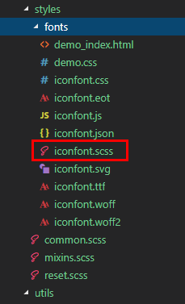
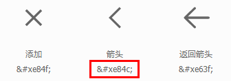
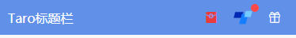
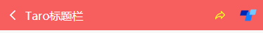
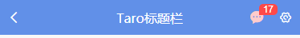
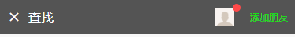
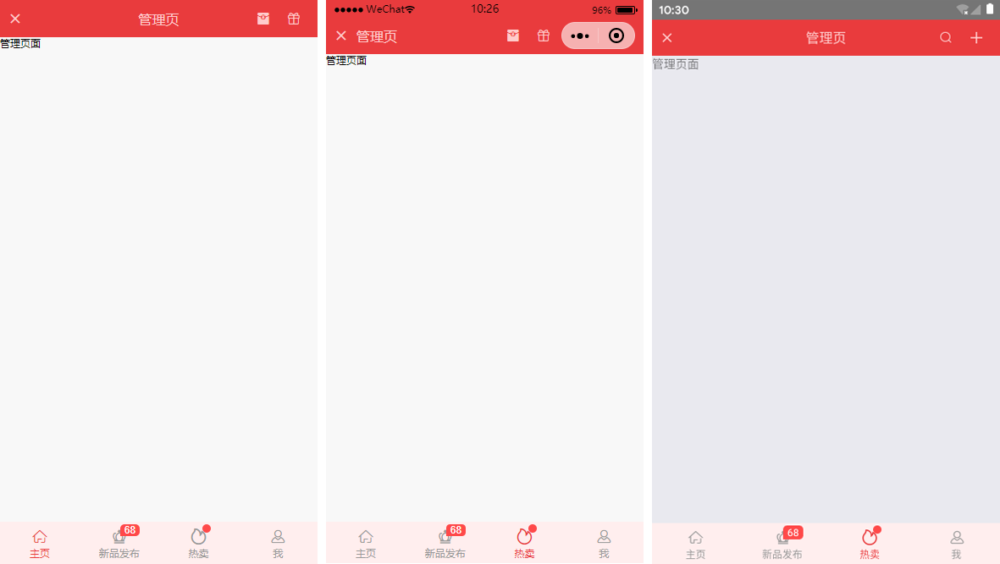

原文连接:https://www.cnblogs.com/xiaoyan2017/p/11937043.html
运用Taro实现多端导航栏/tabbar实例 (H5 + 小程序 + React Native)
最近一直在捣鼓taro开发，虽说官网介绍支持编译到多端，但是网上大多数实例都是H5、小程序，很少有支持RN端。恰好Taro是基于React技术，想着之前也做过一些react项目，如是抱着好奇深究了一番，采坑了不少，尤其是编译到RN时样式问题。

如上图：分别在H5、小程序、RN端运行效果
◆ Taro引入阿里字体图标Iconfont
在进行下文介绍之前，先简单介绍下taro字体图标的使用，如果你项目中有引入Taro-UI，直接使用taro-ui图标即可
详情看 taro-ui图标
下载好阿里字体图标后，复制fonts文件夹到项目下，如下图放在：styles目录下，并将iconfont.css复制一份改为iconfont.scss
引入： import './styles/fonts/iconfont.scss'


在h5、小程序下 这种写法即可： <Text className="iconfont icon-back"></Text>
不过为了兼容RN，只能通过Unicode方式这样写： <Text className="iconfont"></Text>
如果是通过变量传递： let back = '\ue84c' <Text>{back}</Text>
◆ 自定义导航栏Navbar
在项目根目录App.js里面 配置navigationStyle，将其设置为custom，此时就进入自定义导航栏模式
class App extends Component {
config = {
pages:
'pages/index/index',
...
],
window: {
backgroundTextStyle: 'light',
navigationBarBackgroundColor: '#fff',
navigationBarTitleText: 'Taro',
navigationBarTextStyle: 'black',
navigationStyle: 'custom'
},
...
}
...
}在components目录下新建导航栏Navbar组件
import Taro from '@tarojs/taro'
import { View, Text, Input, Image } from '@tarojs/components'
import classNames from "classnames";
import './index.scss'
export default class NavBar extends Taro.Component {
// 默认配置
static defaultProps = {
isBack: false,
leftIcon: '\ue84c',
title: ' ',
background: '#6190e8',
color: '#fff',
center: false,
search: false,
searchStyle: '',
fixed: false,
headerRight: [],
}
constructor(props) {
super(props)
this.state = {
searchText: '',
}
}
...
render() {
const { isBack, leftIcon, title, background, color, center, search, searchStyle, fixed, height, headerRight } = this.props
const { searchText } = this.state
let weapp = false
if (process.env.TARO_ENV === 'weapp') {
weapp = true
}
return (
<View className={classNames('taro__navbar', fixed && 'taro__navbar--fixed', fixed && weapp && 'taro__navbar-weapp--fixed')}>
<View className={classNames('taro__navbar-wrap', fixed && 'taro__navbar-wrap--fixed', weapp && 'taro__navbar-wrap__weapp')} style={{backgroundColor: background}}>
{/* 返回 */}
<View className={classNames('taro__navbar-left__view', isBack && 'taro__navbar-left__view--isback')}>
{isBack &&
<TouchView activeOpacity={.5} onClick={this.handleNavigateBack}>
<View className="taro__navbar-icon__item"><Text className="iconfont taro__navbar-iconfont" style={{color: color}}>{leftIcon}</Text></View>
</TouchView>
}
</View>
{/* 标题 */}
{!search && center && !weapp ? <View className="flex1" /> : null}
{search ?
(
<View className="taro__navbar-search flex1">
<Input className="taro__navbar-search__input" placeholder="搜索..." onInput={this.updateInputText} style={{color: color, ...searchStyle}} />
</View>
)
:
(
<View className={classNames('taro__navbar-title flex1', center && !weapp && 'taro__navbar-title--center')}>
{title && <Text className="taro__navbar-title__text" style={{color: color}}>{title}</Text>}
</View>
)
}
{/* 右侧 */}
<View className="taro__navbar-right__view">
{headerRight.map((item, index) => (
<TouchView activeOpacity={.5} key={index} onClick={()=>item.onClick && item.onClick(searchText)}>
<View className="taro__navbar-icon__item">
{item.icon && <Text className="iconfont taro__navbar-iconfont" style={{color: color, ...item.style}}>{item.icon}</Text>}
{item.text && <Text className="taro__navbar-iconfont__text" style={{color: color, ...item.style}}>{item.text}</Text>}
{item.img && <Image className="taro__navbar-iconfont__img" src={item.img} mode='aspectFit' />}
{/* 圆点 */}
{!!item.badge && <Text className="taro__badge taro__navbar-badge">{item.badge}</Text>}
{!!item.dot && <Text className="taro__badge-dot taro__navbar-badge--dot"></Text>}
</View>
</TouchView>
))
}
</View>
</View>
</View>
);
}
}在页面引入组件即可： import NavBar from '@components/navbar'
引入方式有两种：
// index/index.js 首页
import NavBar from '@components/navbar'
class Index extends Component {
config = {
navigationBarTitleText: '首页',
usingComponents: {
'navbar2': '../../components/navbar', // 书写第三方组件的相对路径
},
}
render () {
return (
<View className='index'>
{ /* 方法一 */ }
<NavBar />
{ /* 方法二 */ }
<navbar2 />
...
</View>
)
}
}支持自定义背景、颜色、左侧图标、标题居中、搜索框，右侧按钮支持图标/文字/图片，还可以设置样式，红点提示、事件处理

<NavBar title='Taro标题栏' fixed
headerRight={[
{icon: '\ue614', style: {color: '#e93b3d'}},
{img: require('../../assets/taro.png'), dot: true, onClick: this.handleCallback},
{icon: '\ue600', style: {marginRight: 10}},
]}
/>


<NavBar isBack leftIcon={'\ue69f'} title='搜索栏' background='#42b983' color='#fcc' search
searchStyle={{
backgroundColor:'rgba(255,255,255,.6)', borderRadius: Taro.pxTransform(50), color: '#333'
}}
headerRight={[
{icon: '\ue622', style: {color: '#6afff9'}},
{icon: '\ue63a'},
]}
/>
<NavBar isBack leftIcon={'\ue84f'} title='查找' background='#545454' color='#fff'
headerRight={[
{img: require('../../assets/default-avatar.png'), dot: true},
{text: '添加朋友', style: {color: '#15e413'}},
]}
/>◆ 自定义底部Tabbar菜单
如果在App.js里面没有配置tabbar，则可以自定义底部，如下图在三端下效果

同样在components目录下新建tabbar组件
import Taro from '@tarojs/taro'
import { View, Text } from '@tarojs/components'
import classNames from 'classnames'
import './index.scss'
export default class TabBar extends Taro.Component {
// 默认参数配置
static defaultProps = {
current: 0,
background: '#fff',
color: '#999',
tintColor: '#6190e8',
fixed: false,
onClick: () => {},
tabList: []
}
constructor(props) {
super(props)
this.state = {
updateCurrent: props.current
}
}
...
render() {
const { background, color, tintColor, fixed } = this.props
const { updateCurrent } = this.state
return (
<View className={classNames('taro__tabbar', fixed && 'taro__tabbar--fixed')}>
<View className={classNames('taro__tabbar-list', fixed && 'taro__tabbar-list--fixed')} style={{backgroundColor: background}}>
{this.props.tabList.map((item, index) => (
<View className="taro__tabbar-item taro__tabbar-item--active" key={index} onClick={this.updateTabbar.bind(this, index)}>
<View className="taro__tabbar-icon">
<Text className="iconfont taro__tabbar-iconfont" style={{color: updateCurrent == index ? tintColor : color}}>{item.icon}</Text>
{/* 圆点 */}
{!!item.badge && <Text className="taro__badge taro__tabbar-badge">{item.badge}</Text>}
{!!item.dot && <Text className="taro__badge-dot taro__tabbar-badge--dot"></Text>}
</View>
<Text className="taro__tabbar-title" style={{color: updateCurrent == index ? tintColor : color}}>{item.title}</Text>
</View>
))}
</View>
</View>
);
}
}自定义tabbar也支持自定义背景、颜色、图标，点击选项事件返回索引值
<TabBar current={currentTabIndex} background='#f8f8f8' color='#999' tintColor='#6190e8' fixed onClick={this.handleTabbar}
tabList={[
{icon: '\ue627', title: '首页', badge: 8},
{icon: '\ue61e', title: '商品'},
{icon: '\ue605', title: '个人中心', dot: true},
]}
/>// tabbar事件
handleTabbar = (index) => { this.setState({currentTabIndex: index}) }
emmmm~~~，到这里就介绍差不多了，后续会考虑使用Taro技术开发个h5/小程序/RN端实战项目。😏
最后附上：
react聊天室实例：https://www.cnblogs.com/xiaoyan2017/p/11106246.html
ReactNative仿微信App实例：https://www.cnblogs.com/xiaoyan2017/p/11441285.html